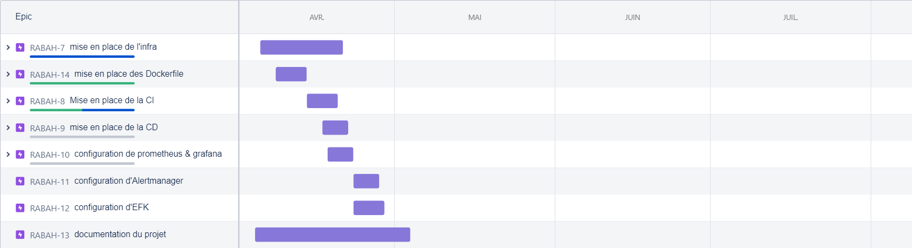
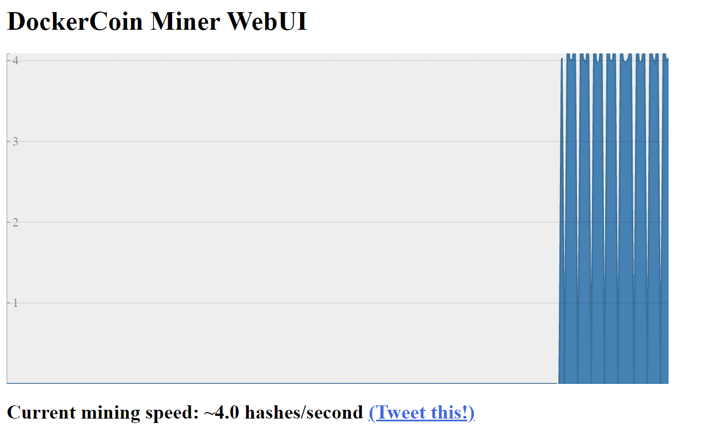
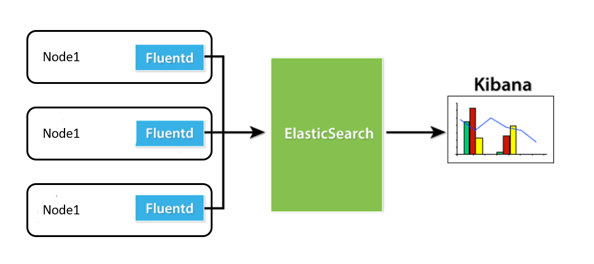

Dans le cadre de mon intégration chez Teolia je me suis vu intégrer la Teoschool durant le premier mois suite à son un projet ma étai attribuer qui était de mettre en place une chaîne CI/CD complète permettant de déployer une app web sur un cluster AKS, ce dernier doit être mis en place avec un processus automatisé, ce qui a donné naissance à un projet complet et touchant a tous les maillants de la chaine CI/CD et de l'Infras as code.
Durant ce projet un suivi des taches quotidiennes a etait mis en place et cela via un outil de ticketing et suivie de projet, cela a été fait avec la mise en place d'une feuille de route sur Jira comme suit:
L’application conteneurisée est Dockercoin, c'est une application de démonstration utilisée à l'origine dans l'atelier d'orchestration de Jérôme Petazzoni. Atelier pratique Kubernetes, cette dernière est constituée de 4 services, que j'ai conteneurisé comme suit:
À fin de tester le déploiement de cette application on met en place une docker compose à fin de tester le déploiement de cette appli à travers le déploiement des 4 services.
La mise en place d'une infas structurée et maintenable est la clé pour construire un déploiement solide, pour cela je consacre une grande importance à cette partie. Dans le cadre du projet Teoschool, j’ai décidé de mettre en place l’infra sur là quel le déploiement du projet sera construit, pour cela le choix s’est porté sur un déploiement qui se fera sur un cluster Kubernetes Azure (AKS).
Le déploiement est fait sur un cluster AKS, le déploiement d'une infras automatisé est nécessaire. pour parvenir a cela il aurait fallut mettre en place une infra maintenable, évolutive et automatisé 2 outils ont etaient choisis terraform et Azure devops.
comme apparu sur les schémas ci-dessus le déploiement de cette infra ce fait d'une façon automatisée via un pipeline azure Devops, ce dernier est composé d'une partie deploiement du cluster AKS qui est faite avec du terraform suivie d'une deuxième qui permet l'installation d'un outil continuous deployment(fluxcd), monitoring (prometheus & grafana) et en fin de logging (stack EFK).
Une fois le pipeline déployé on aura à la fin une clé SSH qui fera office de clé de déploiement fluxcd, permettant de lier le compte github à flux et ainsi permettre un déploiement automatisé de notre app web.
A fin de permettre un deploiement continue et automatisé du cluster kubernetes sur AKS j'ai choisi de faire du gitops avec fluxcd, les raisons principales de mon choix sont:
La stack kube-prometheus-stack est une collection de manifest kubernetes compose de:
Le suivie de logs et une étape primordiale afin de permettre la détection, le debug et la maintenance d'erreurs au sein d'un cluster kubernetes, pour cela j'ai préféré installe une stack EFK qui permettrait de remontée les logs liés à mon cluster et de les afficher la figure suivante illustre le different composant de ma stack et le fonctionnement de cette dernière.
Ce projet est un projet open source. Ouvert à l'amélioration et peut-être utilise afin de permettre la mise en place d'un pipeline CI/CD pour different projet. Nombreux sont les projets qui peuvent se voir applique une infra pareille avec inclus un outil de logging, monitoring et de gitons, partagez vos idées ou utiliser directement au projet.